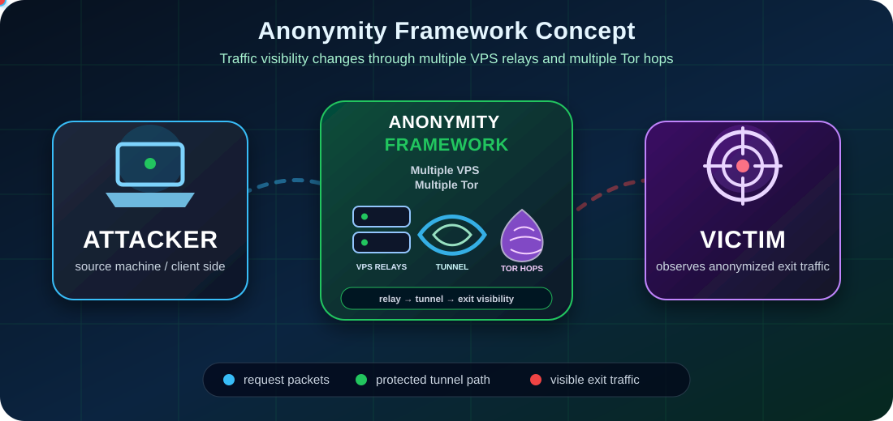

Wireshark
Wireshark
 Kali Linux · WireGuard · Tor
Kali Linux · WireGuard · Tor

What is the Framework?
This lab shows how traffic moves from a Kali client through controlled relay stages before reaching the final IT network.
- Client: the Kali machine where testing commands are launched.
- Firewall: controls which traffic is allowed to enter or leave the lab path.
- VPS-1 & VPS-2: relay nodes that forward traffic and change what each side can directly observe.
- Tor / final stage: represents the last anonymity or observation layer in the training chain.
ClientOrigin workstation
RelaysVPS-1 and VPS-2
 ObserverUbuntu + Wireshark
ObserverUbuntu + Wireshark